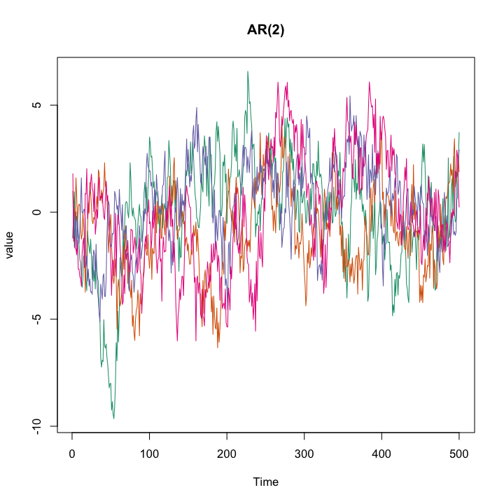
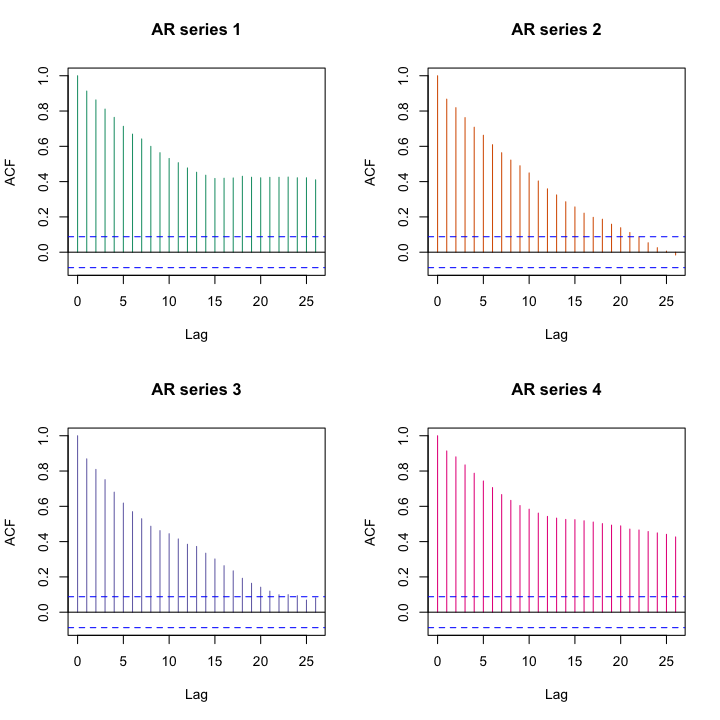
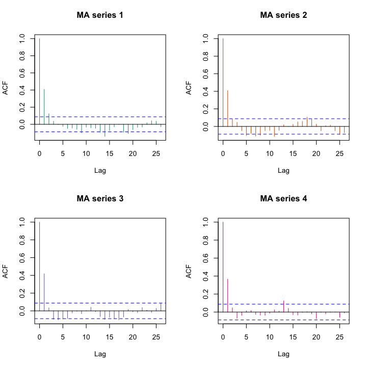
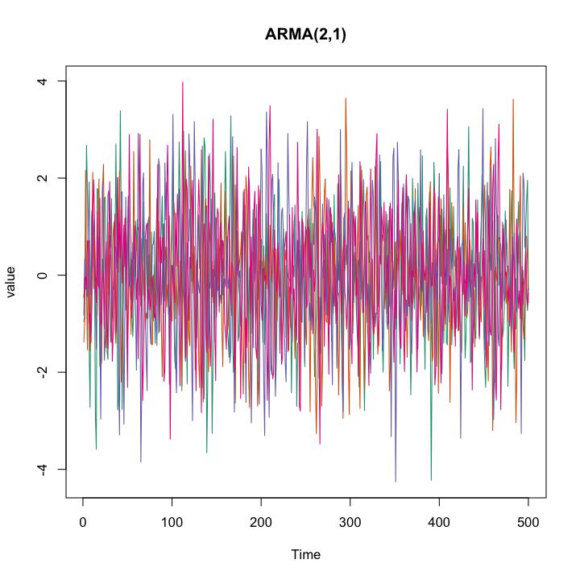
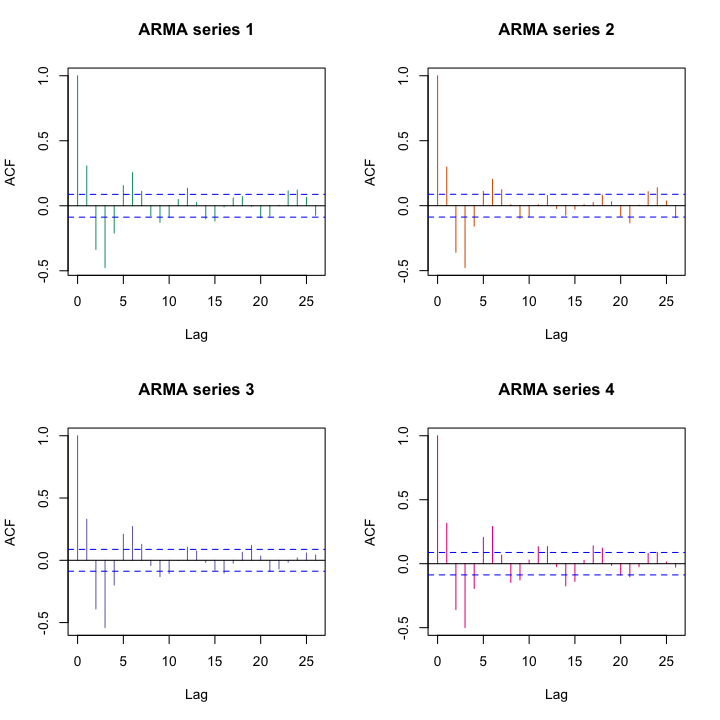
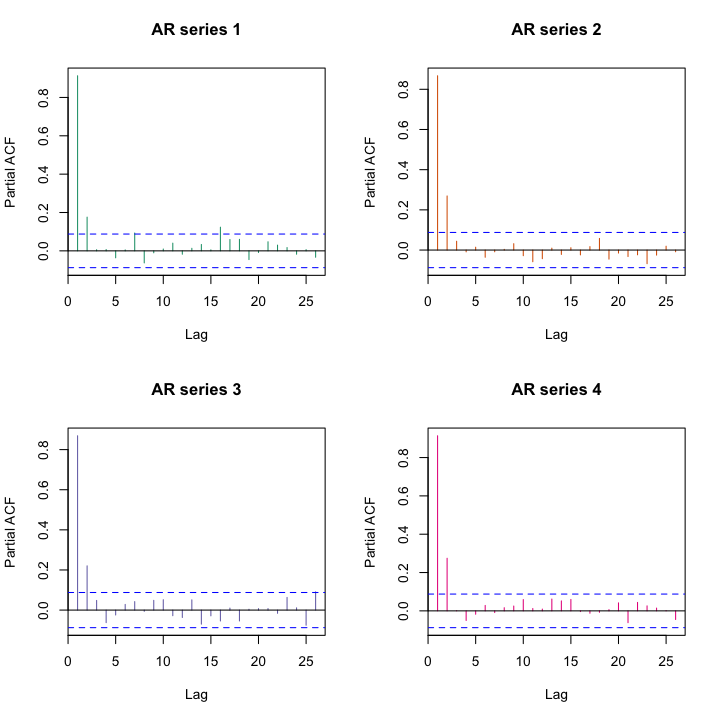
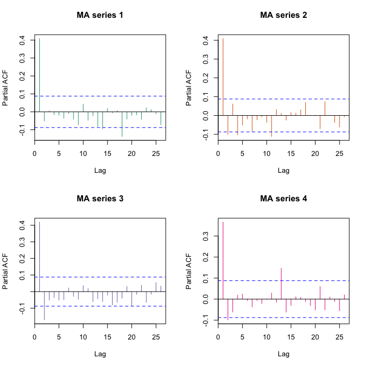
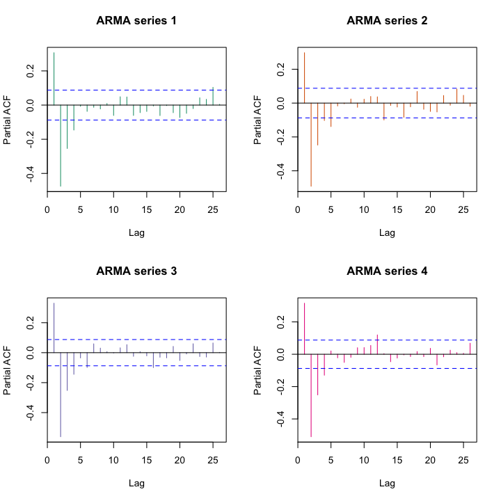

時系列解析
推定と予測
(Press ? for help, n and p for next and previous slide)
今週の内容
- 第1日: 時系列のモデル
- 第2日: モデルの推定と予測
時系列解析の復習
時系列解析とは
- 時系列データ
- 時間軸に沿って観測されたデータ
- 観測の順序に意味がある
- 異なる時点間での観測データの従属関係が重要
- 独立性にもとづく解析は行えない
(そのままでは大数の法則や中心極限定理は使えない)
- 時系列解析の目的
- 時系列データの特徴を効果的に記述すること
- 時系列モデルの推定と評価
時系列モデルと定常性
確率過程
時間を添え字として持つ確率変数列
\begin{equation} X_{t},\;t=1,\dotsc,T \end{equation}- 弱定常過程: 以下の性質をもつ確率過程 \(X_t\)
- \(X_{t}\)の平均は時点\(t\)によらない
- \(X_{t}\)と\(X_{t+h}\)の共分散は時点\(t\)によらず時差\(h\)のみで定まる
- 特に\(X_{t}\)の分散は時点\(t\)によらない (\(h=0\)の場合)
- 多くの場合，弱定常性を考えれば十分なので 単に 定常 ということが多い
- 定常でない確率過程は 非定常 であるという
ホワイトノイズ
定義
平均\(0\)，分散\(\sigma^{2}\) である確率変数の 確率分布\(P\)からの 独立かつ同分布な確率変数列
\begin{equation} X_{t} = \epsilon_{t}, \quad \epsilon_{t} \overset{i.i.d.}{\sim} P \end{equation}- 記号 \(\mathrm{WN}(0,\sigma^{2})\) で表記
- 定常 な確率過程
トレンドのあるホワイトノイズ
定義
\(\mu,\alpha\) を定数として
\begin{equation} X_{t}=\mu+\alpha t+\epsilon_{t}, \quad \epsilon_{t} \sim \mathrm{WN}(0,\sigma^2) \end{equation}で定義される確率過程
- 非定常 な確率過程
ランダムウォーク
定義
\(X_0\) を定数もしくは確率変数として
\begin{equation} X_{t}=X_{t-1}+\epsilon_{t}, \quad \epsilon_{t} \sim \mathrm{WN}(0,\sigma^2) \end{equation}で帰納的に定義される確率過程
- 分散が時間とともに増加・記憶のあるモデル
- 非定常 な確率過程
自己回帰過程
定義 (次数\(p\)のARモデル)
\(a_1,\dotsc,a_p\)を定数とし， \(X_1,\dotsc,X_p\)が初期値として与えられたとき，
\begin{equation} X_{t}=a_1X_{t-1}+\cdots+a_pX_{t-p}+\epsilon_{t}, \quad \epsilon_{t} \sim \mathrm{WN}(0,\sigma^2) \end{equation}で帰納的に定義される確率過程
- ランダムウォークの一般化
- 無限長の記憶のある(忘却しながら記憶する)モデル
- 定常にも非定常にもなる
移動平均過程
定義 (次数\(q\) のMAモデル)
\(b_1,\dotsc,b_q\)を定数とし， \(X_1,\dotsc,X_q\)が初期値として与えられたとき
\begin{equation} X_{t} = b_1\epsilon_{t-1}+\cdots+b_q\epsilon_{t-q}+\epsilon_{t}, \quad \epsilon_{t} \sim \mathrm{WN}(0,\sigma^2) \end{equation}で定義される確率過程
- 有限長の記憶のあるモデル
- 定常 な確率過程
自己回帰移動平均過程
定義 (次数\((p,q)\)のARMAモデル)
\(a_1,\dotsc,a_p,b_1,\dotsc,b_q\) を定数とし， \(X_1,\dotsc,X_{\max\{p,q\}}\) が初期値として与えられたとき
\begin{align} X_{t} &= a_1X_{t-1}+\cdots+a_pX_{t-p}\\ &\quad+ b_1\epsilon_{t-1}+\cdots+b_q\epsilon_{t-q} +\epsilon_{t},\\ &\quad \epsilon_{t} \sim \mathrm{WN}(0,\sigma^2) \end{align}で帰納的に定まる確率過程
- AR・MAモデルの一般化・基本的な時系列モデル
- 定常にも非定常にもなる
自己共分散・自己相関
- 弱定常な確率過程: \(X_{t},\;t=1,\dotsc,T\)
\(X_{t}\) と \(X_{t+h}\) の共分散は時点\(t\)によらずラグ\(h\)のみで定まる
自己共分散 (定常過程の性質よりラグは\(h\ge0\)を考えればよい)
\begin{equation} \gamma(h) = \mathrm{Cov}(X_{t},X_{t+h}) \end{equation}\(X_{t}\) と \(X_{t+h}\) の相関も\(t\)によらずラグ\(h\)のみで定まる
自己相関
\begin{equation} \rho(h) =\gamma(h)/\gamma(0) = \mathrm{Cov}(X_{t},X_{t+h})/\mathrm{Var}(X_{t}) \end{equation}
- 異なる時点間での観測データの従属関係を要約するための最も基本的な統計量

Figure 1: 同じモデルに従うAR過程の例

Figure 2: AR過程の自己相関

Figure 3: 同じモデルに従うMA過程の例

Figure 4: MA過程の自己相関

Figure 5: 同じモデルに従うARMA過程の例

Figure 6: ARMA過程の自己相関
ARモデルの推定
自己共分散・自己相関
- 平均\(0\)の弱定常な確率過程: \(X_{t},\;t=1,\dotsc,T\)
\(X_{t}\) と \(X_{t+h}\) の共分散は時点\(t\)によらずラグ\(h\)のみで定まる
自己共分散
\begin{equation} \gamma(h) = \mathrm{Cov}(X_{t},X_{t+h}) = \mathbb{E}[X_{t}X_{t+h}] \end{equation}\(X_{t}\)と\(X_{t+h}\)の相関も\(t\)によらずラグ\(h\)のみで定まる
自己相関係数
\begin{equation} \rho(h) =\mathrm{Cov}(X_{t},X_{t+h})/\mathrm{Var}(X_{t}) =\gamma(h)/\gamma(0) \end{equation}
自己共分散とARモデル
AR(p)モデル:
\begin{equation} X_{t} = a_{1}X_{t-1}+a_{2}X_{t-2}+\dotsb+a_{p}X_{t-p}+\epsilon_{t} \end{equation}係数と自己共分散の関係
\begin{align} \gamma(h) &= \mathbb{E}[X_{t}X_{t+h}]\\ &= \mathbb{E}[X_{t}(a_{1}X_{t+h-1}+\dotsb+a_{p}X_{t+h-p}+\epsilon_{t+h})]\\ &= a_{1}\mathbb{E}[X_{t}X_{t+h-1}] +\dotsb +a_{p}\mathbb{E}[X_{t}X_{t+h-p}] +\mathbb{E}[X_{t}\epsilon_{t+h}]\\ &= a_{1}\gamma(h-1) +\dotsb+ a_{p}\gamma(h-p) \end{align}
Yule-Walker方程式
\(1\le h\le p\) を考えると以下の関係が成り立つ
\begin{equation} \begin{pmatrix} \gamma(1)\\ \gamma(2)\\ \vdots\\ \gamma(p) \end{pmatrix} = \begin{pmatrix} \gamma(0)&\gamma(-1)&\dots&\gamma(-p+1)\\ \gamma(1)&\gamma(0)&\dots&\gamma(-p+2)\\ \vdots&\vdots&\ddots&\vdots\\ \gamma(p-1)&\gamma(p-2)&\dots&\gamma(0) \end{pmatrix} \begin{pmatrix} a_{1}\\ a_{2}\\ \vdots\\ a_{p} \end{pmatrix} \end{equation}- 行列は Toeplitz 行列と呼ばれる
- 行列が正則ならばARの係数は一意に求まる
偏自己相関
AR(p)モデル:
\begin{equation} X_{t} = a_{1}X_{t-1}+a_{2}X_{t-2}+\dotsb+a_{p}X_{t-p}+\epsilon_{t} \end{equation}ラグ\(p\)の 自己相関係数 (特殊な解釈)
\(a_{1}=a_{2}=\dotsb=a_{p-1}=0\)のときの\(a_{p}\)
\begin{equation} \mathbb{E}[X_{t}X_{t+p}]=a_{p}\mathbb{E}[X_{t}X_{t}] \;\Rightarrow\; \gamma(p)=a_{p}\gamma(0) \;\Rightarrow\; \rho(p)=a_{p} \end{equation}ラグ\(p\)の 偏自己相関係数
AR(p)モデルを仮定したときの\(a_{p}\)の推定値 (Yule-Walker方程式の解)

Figure 7: AR過程の偏自己相関

Figure 8: MA過程の偏自己相関

Figure 9: ARMA過程の偏自己相関
モデルの推定に関する補足
- ARMAモデルの推定方法は主に以下の3つ
- Yule-Walker方程式
- 最小二乗
- 予測誤差の平方和の最小化
- 回帰と同じだが，従属系列のため多重共線性に注意
- 最尤推定
- WNの分布を仮定して同時尤度関数を設定
- 非線形最適化を行う
- 一般にモデルは近似なので，どの推定が良いかは問題による
演習
問題
以下で定義されるMA(1)について問に答えなさい
\begin{equation} X_{t} = b_{1}\epsilon_{t-1}+\epsilon_{t}, \quad \epsilon_{t} \sim \mathrm{WN}(0,\sigma^2) \end{equation}- ラグ2までの自己共分散係数を求めなさい
- パラメタ\(b_{1}\)が満すべき方程式を求めなさい
モデルによる予測
モデルによる予測
- 推定したモデルを用いて\(n\)期先を予測
- ARモデル: 観測時点までの観測値を用いて回帰
- MAモデル: 観測時点までのホワイトノイズで回帰
- ARMAモデル: 上記の複合
- いずれも \(n\)が大きいと不確定性が増大
- 階差による変換は累積(階差の逆変換)により推定
分解による予測
トレンド成分+季節成分+ランダム成分への分解
\begin{equation} X_{t}=T_{t}+S_{t}+R_{t} \end{equation}- トレンド成分: 時間の関数やランダムウォークなどを想定
- 季節成分: 周期的な関数を想定
- ランダム成分: ARMAモデルなどを想定
- 分解の考え方
- ランダム成分: 適切な幅の移動平均が0
- 季節成分: 1周期の平均が0